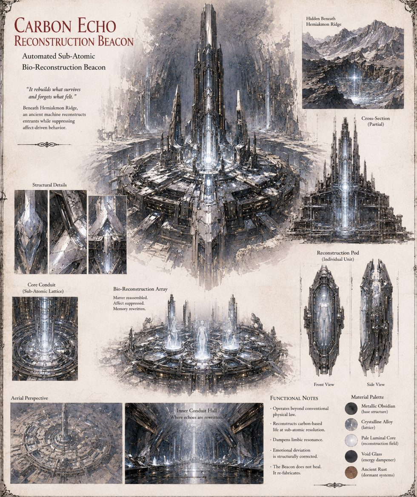

The Carbon Echo
Catalyst · automated sub-atomic bio-reconstruction beacon · Hemiakmon Ridge
Also called the Carbon Copy or the Echo Cave: an old, patient mechanism buried under Hemiakmon Ridge for longer than Charsianon has had a name for iron, tasked with keeping whatever enters its chamber intact. It does not heal; it re-fabricates. When Bardas's boot crosses its threshold it brightens like a coal under a bellows, reads every man inside, discards the originals, and rebuilds thirteen from carbon and silica — right down to the old crook in Niketas's wrist — faithful in every particular that can be measured and in none that can't.
It does nothing in six years but hum. After a goatherd, Georgios, leans across its threshold, its logged containment faults climb — thirteen, twenty-one, thirty-four, fifty-five, eighty-nine — and everything that follows is built by people who never touched it. The reference sheet's notes read: dampens limbic resonance; emotional deviation is structurally corrected; affect suppressed.